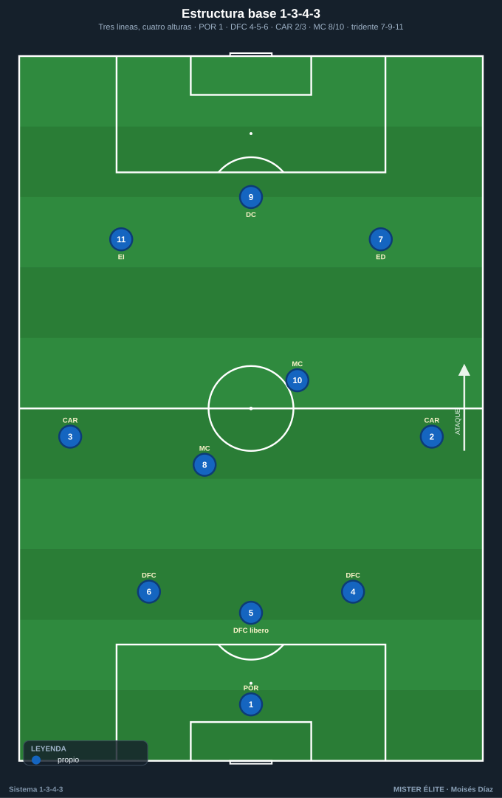
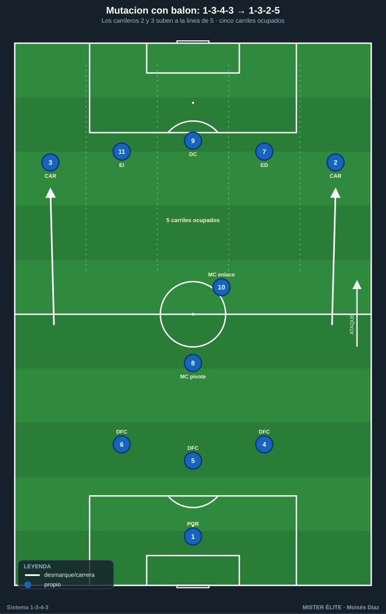
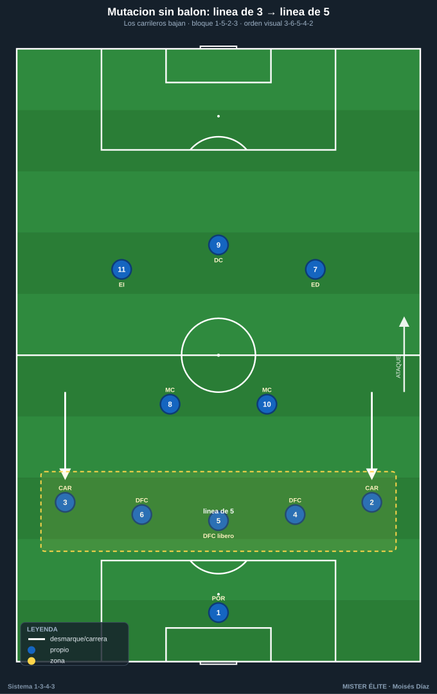
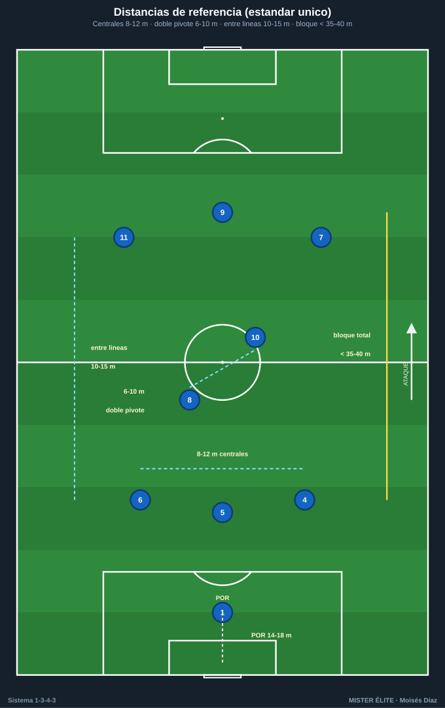
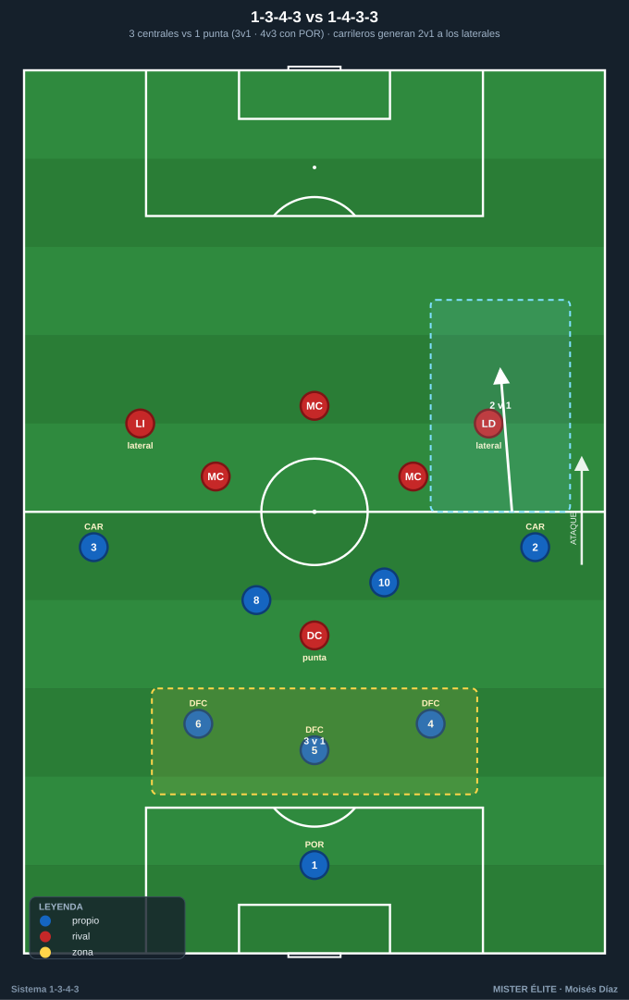

Módulo 01 · Fundamentos y estructura del 1-3-4-3
Convención: POR 1 · DFC 4-5-6 (5 = central/líbero organizador) · CAR 2/3 · MC 8/10 · tridente ED 7 · DC 9 · EI 11. SÍ hay extremos. Mutación clave con balón: 1-3-4-3 → 1-3-2-5.
El 1-3-4-3 no se entiende por su foto estática, sino por cómo muta. Es un sistema dinámico: cambia de forma en cada fase del juego. Este módulo te da lo justo de teoría para que el resto del curso (defensa, ataque, transiciones y las 26 tareas) tenga sentido.
1. La estructura: tres líneas, cuatro alturas
Sobre el papel: portero + 3 centrales + 4 medios (2 carrileros + 2 mediocentros) + 3 delanteros. En juego son cuatro alturas reales.

Línea de 3 centrales (DFC 4-5-6)
- DFC 5 es el central del medio: líbero / organizador. Inicia la circulación, ordena la línea, da coberturas y, si el rival no presiona, conduce hacia el medio para generar superioridad.
- DFC 4 y 6 son los laterales de la línea de 3. Marca + cobertura por su carril, salen a presionar al interior/extremo rival que cae a su zona y luego recuperan posición.
- Idea fuerza: defender el centro en bloque y estar siempre en superioridad o igualdad en la primera fase (3 centrales vs. 1-2 atacantes rivales → salida limpia).
Doble medio (MC 8/10) + carrileros (CAR 2/3)
- MC 8 (pivote): ancla posicional por delante de los 3 centrales. Equilibrio, primer pase, protección del eje. Cuando los carrileros suben, él no sube: se queda para el resto defensivo.
- MC 10 (ofensivo / box-to-box): recibe entre líneas, asocia con el tridente y llega al área. Complementario del 8 (uno sostiene, otro progresa).
- CAR 2/3 (carrileros): el motor del sistema. Con balón suben a dar amplitud; sin balón bajan y convierten la línea de 3 en línea de 5.
Tridente (ED 7 · DC 9 · EI 11)
- DC 9: referencia, pivote ofensivo, fija a los centrales y ataca el área.
- ED 7 / EI 11: extremos. Dan amplitud arriba o pisan por dentro liberando el carril para el carrilero. Primera línea de presión sin balón.
2. La idea fuerza: la MUTACIÓN
El 1-3-4-3 se reconfigura en cada fase. Memoriza esta tabla: es la columna vertebral de todo el curso.
| Fase | Movimiento | Forma resultante |
|---|---|---|
| Con balón (ataque) | Carrileros suben a la línea del tridente; el doble pivote sostiene; los 3 centrales se quedan | 1-3-2-5 — cinco atacantes (CAR 2 · ED 7 · DC 9 · EI 11 · CAR 3) dando amplitud máxima |
| Sin balón (bloque medio/bajo) | Carrileros bajan a la línea de centrales | 1-5-2-3 (presión escalonada) o 1-5-4-1 (repliegue: extremos bajan al medio) |
| Salida en presión alta rival | Centrales abren y carrileros bajan a su altura | Primera línea de 5 (DFC 4-5-6 + CAR 2-3) + POR como +1 |


Esa respiración carril-amplitud / carril-línea de 5 es lo que hace al sistema. La misma plantilla defiende con 5 y ataca con 5 sin cambiar jugadores.
Ocupación de los cinco carriles (con balón, en 1-3-2-5)
| Carril | Jugador |
|---|---|
| Banda izq. | CAR 3 |
| Interior izq. | EI 11 |
| Centro | DC 9 |
| Interior der. | ED 7 |
| Banda der. | CAR 2 |
Detrás queda el bloque de construcción 3+1 (DFC 4-5-6 + MC 8), con el 10 como enlace flotante. Regla: un jugador por carril → siempre hay un hombre libre lejos del balón para el cambio de orientación.
3. Distancias y alturas de referencia

Estándar único del curso (rige en todos los documentos y pizarras):
- Separación entre centrales (DFC 4-5-6): 8-12 m.
- Doble pivote (8/10): 6-10 m entre ambos; el 8 más bajo, el 10 más alto.
- Distancia entre líneas: 10-15 m.
- Bloque total compacto: < 35-40 m.
- Línea defensiva: bloque alto 40-45 m · medio 30-35 m · bajo 18-22 m del propio marco.
- POR-líbero adelantado 14-18 m con bloque medio/alto.
- Profundidad del bloque ofensivo: ~30-35 m entre el central de inicio y la punta (no se estira más, para mantener distancias de pase y resto defensivo).
4. Historia y vigencia (lo esencial)
- Cruyff y el Fútbol Total (Ajax/Países Bajos, años 70). Posiciones fluidas, el portero como "primer atacante", el delantero como "primer defensor". Ya como técnico del Dream Team del Barça, Cruyff construyó un 3-4-3 en rombo con Koeman de líbero pisando el medio y Guardiola bajando a la defensa al perder: el embrión del líbero/DFC 5 moderno.
- Bielsa. Control del espacio, intercambios de posición y presión hombre a hombre. Inspira el componente de presión a la espalda.
- Conte (Chelsea 2016-17). Empezó con 4-2-3-1; tras dos derrotas (2-1 ante Liverpool, 3-0 ante Arsenal) viró al 3-4-3, lo estrenó con un 2-0 al Hull y encadenó 13 victorias seguidas, camino del título. Su 3-4-3 con balón mutaba a menudo a 3-4-2-1. Reactivó el sistema en la élite.
- Tuchel. Refinó el back three en transiciones y salidas (Champions 2021 con líneas de 3/5 flexibles). Aporta el matiz vertical.
- Gasperini / Atalanta. La versión más agresiva: alto tempo, marcajes individuales por todo el campo y carrileros como armas ofensivas. Muta a 3-4-1-2 / 3-4-2-1.
- De Zerbi. Aporta la construcción provocada (atraer la presión para superarla), que encaja con la superioridad 3v2 de la primera fase.
- Vigencia. La popularización del 3-2-5 con balón (Guardiola; Xabi Alonso en el Leverkusen invicto en liga) confirma que la estructura de ataque del 1-3-4-3 es dominante hoy.
5. Variantes (mismo sistema, distintos ajustes)
| Eje de variación | Opción A | Opción B | Implicación |
|---|---|---|---|
| Forma del frente | 3-4-3 tridente puro (7-9-11) | 3-4-2-1 (dos mediapuntas tras el 9) | Tridente = más amplitud y profundidad; 3-4-2-1 = más densidad y juego asociativo central (Gasperini/Conte) |
| Línea de 3 | Con líbero (DFC 5 organizador) que conduce | 3 en línea (reparto simétrico de marcas) | Líbero = más salida; 3 en línea = más marca individual (Bielsa/Gasperini) |
| Rol de los extremos | Abiertos (amplitud, 1v1) | Interiores / pisar dentro liberando el carril | Interiores generan el carril para el CAR; abiertos fijan al lateral rival |
| Doble pivote | 8 + 10 simétrico | 8 ancla + 10 liberado (sube a mediapunta) | Si el 10 sube, el sistema tiende al 3-4-2-1 |
No son sistemas distintos: son ajustes de la misma estructura según rival y perfil de jugadores.
6. Ventajas, desventajas y enfrentamientos
Ventajas
- Superioridad estructural en salida (3v2) ante casi todos los bloques con 1-2 puntas.
- Amplitud y profundidad simultáneas vía carrileros + tridente (cinco atacantes en 1-3-2-5).
- Polivalencia de fase: defiende con 5 y ataca con 5, sin cambiar jugadores.
- Transiciones más rápidas hacia atrás: los carrileros reforman la línea de 5 más rápido que un central.
Desventajas
- Espacio a la espalda de los carrileros cuando suben: riesgo en transición.
- Exigencia física brutal de los carrileros (recorren toda la banda los 90'): perfil escaso y caro.
- Vulnerabilidad si el rival fija ambos carrileros abajo: el sistema pierde amplitud y queda en un 1-5-2-3 pasivo.
- Centrales expuestos en campo grande: solo 3 atrás, los duelos individuales se multiplican.
Enfrentamientos

vs 1-4-3-3. En salida, 3 centrales vs 1 punta = 3v1 (o 3v3 si el 4-3-3 presiona con sus extremos saltando a los centrales laterales, pero entonces el POR da el +1 → 4v3 y se abre la espalda de los laterales rivales). Arriba, los carrileros generan 2v1 contra los laterales si los extremos rivales no repliegan. Riesgo: los extremos del 4-3-3 atacan la espalda del carrilero.
vs 1-4-4-2. En primera fase, 3 centrales vs 2 puntas = 3v2: salida casi siempre limpia. Los carrileros encuentran espacio entre el lateral y el volante del 4-4-2. El doble pivote 8/10 puede quedar en 2v2 contra los interiores → clave ganar esa zona.
vs 1-4-2-3-1. 3v1 en salida contra el único punta. Hay que vigilar al mediapunta rival (10), que ataca al doble pivote (lo coge el 8 o un central que salta). La amplitud de los carrileros desborda a los laterales, que ya vigilan al extremo.
Constante: la superioridad nace en la primera línea (3 centrales) y el peligro vive a la espalda de los carrileros y en la transición tras pérdida con los carrileros subidos.
7. Perfiles idóneos por línea
- Portero (POR 1): portero-líbero. Juego de pies fiable, lectura para salir como hombre libre y mandar la línea de 3. Es el "+1" permanente.
- DFC 5 (líbero): el mejor con balón. Saca jugado, conduce, lee coberturas. Cerebro de la línea.
- DFC 4 y 6: centrales que saltan/salen a presionar por su lado y conducen al espacio. Agresivos en el duelo, capaces de defender 1v1 al extremo/interior rival.
- Carrileros (CAR 2/3): el perfil más exigente. Motor inagotable, velocidad, 1v1 ofensivo y defensivo, buen centro, disciplina táctica. Son el sistema.
- MC 8 (ancla): posicional, primer pase, inteligencia defensiva, resto. MC 10 (llegador): recibe entre líneas, conduce, llega al área. Nunca dos del mismo perfil.
- Extremos (ED 7 / EI 11): verticales, desequilibrio en el 1v1, capaces de jugar abiertos o pisar dentro, con sacrificio defensivo.
- DC 9 (referencia): pivote ofensivo, fija centrales, juega de espaldas, ataca el área y remata.
Ideas clave
- El 1-3-4-3 muta: con balón 1-3-2-5, sin balón línea de 5. Esa respiración es el sistema.
- La superioridad nace en la primera línea (3 centrales + POR + pivote): salida limpia ante 1-2 puntas.
- Los carrileros son el motor: dan la primera y la última amplitud.
- El doble pivote escalonado (8 ancla, 10 llegador) protege el eje y da el resto defensivo.
- Se ocupan los 5 carriles en ataque → siempre hay hombre libre para el cambio de orientación.
- El peligro vive a la espalda de los carrileros y en la transición tras pérdida.
Errores comunes
- Jugarlo como sistema fijo (no dejar que mute): pierdes su mayor virtud.
- Subir los dos carrileros a la vez en bloque alto sin resto preventivo: banda abierta a la transición.
- Poner dos pivotes del mismo perfil (dos ancla o dos llegadores): te quedas sin equilibrio o sin progresión.
- No usar al portero como +1: desaprovechas la superioridad permanente en salida.
- Extremos y carrileros pegados los dos a la cal: se anula el desdoblamiento y el 2v1 al lateral.
- Estirar el bloque ofensivo más de 30-35 m: pierdes distancias de pase y resto defensivo.